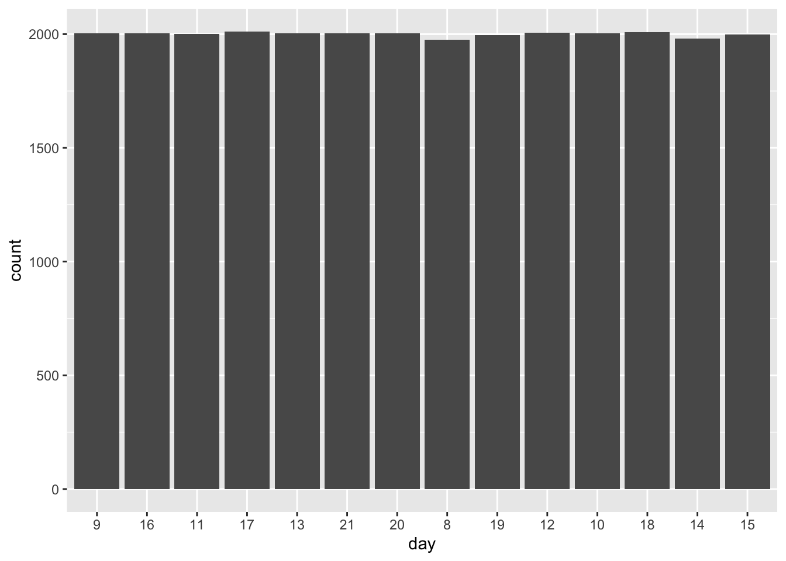

pacman::p_load(arrow,lubridate,tidyverse,tmap,sf)1.0 Introduction
Human mobility, the spatial-temporal dynamics of human movements, serves as a critical reflection of societal patterns and human behaviors. With the advancement and pervasiveness of Information and Communication Technologies (ICT) in our daily life, especially smart phone, a large volume of data related to human mobility have been collected. These data provide valuable insights into understanding how individuals and populations move within and between different geographical locations. By using appropriate GIS analysis methods, these data can turn into valuable inisghts for predicting future mobility trrends and developing more efficient and sustainable strategies for managing urban mobility.
In this study, I will apply Spatial Point Patterns Analysis methods to discover the geographical and spatio-temporal distribution of Grab hailing services locations in Singapore. In order to determine the geographical and spatio-temporal patterns of the Grab hailing services, I will develop traditional Kernel Density Estimation (KDE) and Temporal Network Kernel Density Estimation (TNKDE). KDE layers will help identify the areas with high concentration of Grab hailing services, providing insights into the demand and popularity of these services in different parts of Singapore. TNKDE, on the other hand, will allow for analysis of how the distribution of Grab hailing services changes over time, revealing temporal patterns and trends in their usage. These spatial and spatio-temporal analyses will contribute to a better understanding of the dynamics and effectiveness of Grab’s mobility services in Singapore.
2.0 Literature Review of Spatial Point Pattern Analysis
Spatial point pattern analysis is concerned with description, statistical characterization, modeling and visulisation of point patterns over space and making inference about the process that could have generated an observed pattern (Boots & Getis, 1988,Rey et al., 2023; Pebesma & Bivand, 2023). According to this theory, empirical spatial distribution of points in our daily life are not controlled by sampling, but a result of an underlying geographically-continuous process (Rey et al., 2023). For example, an COVID-19 cluster did not happen by chance, but due to a spatial process of close-contact infection.
When analysing real-world spatial points, it is important to analyse whether the observed spatial points are randomly distributed or patterned due to a process or interaction (Floch et al., 2018). In “complete random” distribution, points are located everywhere with the same probability and independently of each other. On the other hand, the spatial points can be clustered or dispersed due to an underlying point process. However, it is challenging to use heuristic observation and intuitive interpretation to detect whether a spatial point pattern exists (Floch et al., 2018). Hence, spatial point pattern analysis can be used to detect the spatial concentration or dispersion phenomena.

When analysing and interpreting the properties of a point pattern, these properties can be categorized into two: (a) first-order properties and (b) second-order properties (Yuan et al., 2020; Gimond, 2023). First-order properties concern with the characteristics of individual point locations and their variations of their density across space (Gimond, 2023). Under this conception, observations vary from point to point due to changes in the underlying property. Second-order properties focus on not only individual points, but also the interactions between points and their influences on one another (Gimond, 2023). Under this conception, observations vary from place to place due to interaction effects between observations. First-order properties of point patterns are mostly addressed by density-based techniques, such as kernel density, whereas, distance-based techniques, such nearest neighbour index and K-functions, are often used to analyse second-order properties since they take into account the distance between point pairs (Yuan et al., 2020; Gimond, 2023).
3.0 Importing Packages
Before we start the exercise, we will need to import necessary R packages first. We will use the following packages:
spatstat: A package for statistical analysis of spatial data, specifically Spatial Point Pattern Analysis.
rgdal: Used to import geospatial data and output as spatial class objects from sp package
maptools,ggplot2,ggthemes,plotly: Packages used to plot interactive visualisations summary statistics and KDE layers
4.0 Importing Datasets into R Environment
4.1 Datasets
In this study, we will use Grab-Posisi dataset, which is a comprehensive GPS trajectory dataset for car-hailing services in Southeast Asia. Apart from the time and location of the object, GPS trajectories are also characterised by other parameters such as speed, the headed direction, the area and distance covered during its travel, and the travelled time. Thus, the trajectory patterns from users GPS data are a valuable source of information for a wide range of urban applications, such as solving transportation problems, traffic prediction, and developing reasonable urban planning.
Moreover, we will also use OpenStreetMap dataset, which is an open-sourced geospatial dataset including shapefiles of important layers including road networks, forests, building footprints and many other points of interest.
To extract the Singapore boundary, we will download Master Plan 2019 Subzone Boundary (No Sea), provided by data.gov.sg.
4.2 Importing Grab-Posisi Dataset
Each trajectory in Grab-Posisi dataset is serialised in a file in Apache Parquet format. The Singapore portion of the dataset is packaged into a total of 10 Parquet files.
Firstly, we will use read_parquet function from arrow package, which allows us to read Parquet files into R environment as a data frame (more specifically, a tibble).
df <- read_parquet('~/IS415-GAA/data/GrabPosisi/part-00000.snappy.parquet',as_data_frame = TRUE)
df1 <- read_parquet('~/IS415-GAA/data/GrabPosisi/part-00001.snappy.parquet',as_data_frame = TRUE)
df2 <- read_parquet('~/IS415-GAA/data/GrabPosisi/part-00002.snappy.parquet',as_data_frame = TRUE)
df3 <- read_parquet('~/IS415-GAA/data/GrabPosisi/part-00003.snappy.parquet',as_data_frame = TRUE)
df4 <- read_parquet('~/IS415-GAA/data/GrabPosisi/part-00004.snappy.parquet',as_data_frame = TRUE)
df5 <- read_parquet('~/IS415-GAA/data/GrabPosisi/part-00005.snappy.parquet',as_data_frame = TRUE)
df6 <- read_parquet('~/IS415-GAA/data/GrabPosisi/part-00006.snappy.parquet',as_data_frame = TRUE)
df7 <- read_parquet('~/IS415-GAA/data/GrabPosisi/part-00007.snappy.parquet',as_data_frame = TRUE)
df8 <- read_parquet('~/IS415-GAA/data/GrabPosisi/part-00008.snappy.parquet',as_data_frame = TRUE)
df9 <- read_parquet('~/IS415-GAA/data/GrabPosisi/part-00009.snappy.parquet',as_data_frame = TRUE)To consolidate all trajectory instances into a single dataframe, we’ll vertically bind all 10 imported dataframes using bind_rows() function from tidyverse package.
df_trajectories <- bind_rows(df,df1,df2,df3,df4,df5,df6,df7,df8,df9)To get a quick overview of the dataset, we’ll first check the number of trajectory instances using dim() function. Then, we’ll use head() function to quickly scan through the data columns and values
dim(df_trajectories)[1] 30329685 9head(df_trajectories)# A tibble: 6 × 9
trj_id driving_mode osname pingtimestamp rawlat rawlng speed bearing accuracy
<chr> <chr> <chr> <int> <dbl> <dbl> <dbl> <int> <dbl>
1 70014 car android 1554943236 1.34 104. 18.9 248 3.9
2 73573 car android 1555582623 1.32 104. 17.7 44 4
3 75567 car android 1555141026 1.33 104. 14.0 34 3.9
4 1410 car android 1555731693 1.26 104. 13.0 181 4
5 4354 car android 1555584497 1.28 104. 14.8 93 3.9
6 32630 car android 1555395258 1.30 104. 23.2 73 3.9From the result above, we can see that the dataset includes a total of 30329685 trajectory instances, each with a total of 9 columns as follows:
| Column Name | Data Type | Remark |
|---|---|---|
| trj_id | chr | Trajectory ID |
| driving_mode | chr | Mode of Driving |
| osname | chr | |
| pingtimestamp | int | Data Recording Timestamp |
| rawlat | num | Latitude Value (WGS-84) |
| rawlng | num | Longitude Value (WGS-84) |
| speed | num | Speed |
| bearing | int | Bearing |
| accuracy | num | Accuracy |
From the above table, it is seen that the pingtimestamp is recorded as int. We need to convert this data to proper datetime format to derive meaningful temporal insights of the data. To do so, we will use as_datetime() function from lubridate package.
df_trajectories$pingtimestamp <- as_datetime(df_trajectories$pingtimestamp)5.0 Data Wrangling
Data wrangling is the process of converting and transforming raw data into a usable form and is carried out prior to conducting any data analysis.
5.1 Extracting Trip Starting Locations and Temporal Data Values from Grab-Posisi dataset
Firstly, we will extract trip starting locations for all unqiue trajectories in the dataset and store them to a new df named origin_df. We are also interested in obtaining valuable temporal data such as the day of the week, the hour, and the date (yy-mm-dd). To do so, we will use the following functions from lubridate package, and add the newly derived values as columns to origin_df.
wday: allows us to get days component of a date-timehour: allows us to get hours component of a date-timemday: allows us to parse dates with year, month, and day components
origin_df <- df_trajectories %>%
group_by(trj_id) %>%
arrange(pingtimestamp) %>%
filter(row_number()==1) %>%
mutate(weekday = wday(pingtimestamp,
label=TRUE,
abbr=TRUE),
starting_hr = factor(hour(pingtimestamp)),
day = factor(mday(pingtimestamp)))5.2 Extracting Trip Ending Locations and Temporal Data Values from Grab-Posisi dataset
Similar to what we did in previous session, we are also interested to extract trip ending locations and associated temporal data into a new df called destination_df. We will use the same functions from previous session here.
destination_df <- df_trajectories %>%
group_by(trj_id) %>%
arrange(desc(pingtimestamp)) %>%
filter(row_number()==1) %>%
mutate(weekday = wday(pingtimestamp,
label=TRUE,
abbr=TRUE),
starting_hr = factor(hour(pingtimestamp)),
day = factor(mday(pingtimestamp)))
Reflection
arrange() function sort the timestamps in ascending order by default. Hence, this default order is applied to origin_df. However, for destination_df, the arrange(desc()) argument is used to modify the default order to descending.
5.4 Saving R Objects in RDS Format
RDS (R Data Serialization) files are a common format for saving R objects in RStudio, and they allow us to preserve the state of an object between R sessions. Saving R object as an RDS file in R can be useful for sharing our work with others, replicating our analysis, or simply storing our work for later use.
write_rds(origin_df, "../data/rds/origin_df_th.rds")
write_rds(destination_df, "../data/rds/destination_df_th.rds")5.5 Importing RDS Objects
origin_df <- read_rds("../data/rds/origin_df.rds")
destination_df <- read_rds("../IS415-GAA/data/rds/destination_df.rds")5.3 Converting to sf tibble data.frame
origin_sf <- st_as_sf(origin_df,
coords = c("rawlng", "rawlat"),
crs = 4326) %>%
st_transform(crs = 3414)
destination_sf <- st_as_sf(destination_df,
coords = c("rawlng", "rawlat"),
crs = 4326) %>%
st_transform(crs = 3414)6.0 Exploratory Spatial Data Analysis
6.1 Visualising Frequency Distribution
ggplot(data=origin_df,
aes(x=weekday)) +
geom_bar()
ggplot(data=origin_df,
aes(x=day)) +
geom_bar()
6.2 Creating Point Symbol Maps
tmap_mode("view")
tm_shape(origin_sf) +
tm_symbols(size =0.1)+
tm_layout(main.title="Point Symbol Map of Grab Trajectory Origin Points in Singapore")
tmap_mode("view")
destination_point_map <- tm_shape(destination_sf) +
tm_dots()
destination_point_mapReferences
1. Rey, S.J., Arribas-Bel, D., Wolf, L.J.: Point Pattern Analysis. In: Geographic Data Science with python. pp. 185–219. CRC Press, Boca Raton etc. (2023).